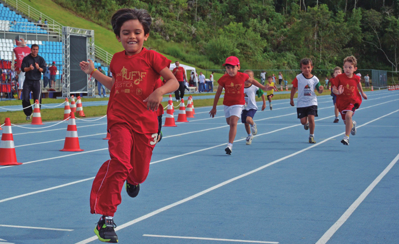
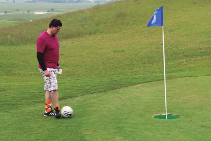
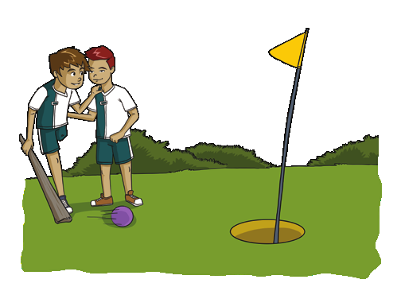
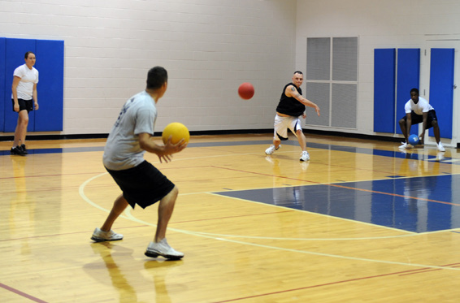
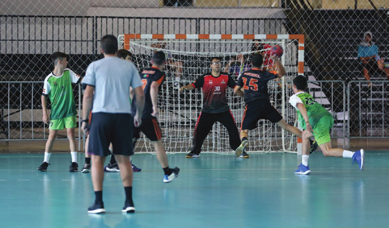
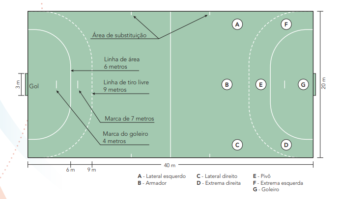
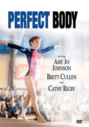
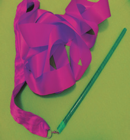
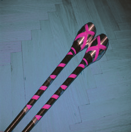

ESPORTES
Iniciando a busca
Ao trabalhar com essa unidade temática, espera-se que os alunos desenvolvam as seguintes habilidades e competências:
• (EF67EF03) Experimentar e fruir esportes de marca, precisão, invasão e técnico-combinatórios, valorizando o trabalho coletivo e o protagonismo.
• (EF67EF04) Praticar um ou mais esportes de marca, precisão, invasão e técnico-combinatórios oferecidos pela escola, usando habilidades técnico-táticas básicas e respeitando regras.
• (EF67EF05) Planejar e utilizar estratégias para solucionar os desafios técnicos e táticos, tanto nos esportes de marca, precisão, invasão e técnico-combinatórios como nas modalidades esportivas escolhidas para praticar de forma específica.
• (EF67EF06) Analisar as transformações na organização e na prática dos esportes em suas diferentes manifestações (profissional e comunitário/lazer).
• (EF67EF07) Propor e produzir alternativas para experimentação dos esportes não disponíveis e/ou acessíveis na comunidade e das demais práticas corporais tematizadas na escola.
• Competências específicas: 5, 8, 10
• Competências gerais: 1, 9, 10
• Competências de linguagens: 3
Enquanto disciplina escolar, a Educação Física apresenta conteúdos variados, como os esportes, os jogos e brincadeiras, a ginástica com suas variações, porém, observa-se a prevalência do esporte como conteúdo base, sobrando pouco espaço para ginástica artística e atletismo, por exemplo.
Assim como as demais unidades temáticas, os esportes precisam despertar nos alunos interesse e prazer com intenção educativa em sua prática. Portanto, essa intenção precisa ser repensada de modo coerente para que o trabalho não seja restrito e repetitivo. Seguindo essa linha de raciocínio, esta unidade tem por objetivo diversificar o repertório de vivências práticas dos alunos.
Fale sobre os esportes e outras práticas corporais (ginástica, dança, jogos, lutas, etc.) no cotidiano das pessoas e seus objetivos para saúde, qualidade de vida, lazer e profissões.
Outro ponto relevante é que o esporte pode ser trabalhado com adaptações consideradas importantes. Dependendo da necessidade, elas devem ser realizadas para que a prática do esporte se amplie e chegue ao alcance de todos, independentemente de suas condições motoras, físicas e intelectuais.
EDUCAÇÃO FÍSICA 26
Essas adaptações podem ocorrer por meio da modificação das regras, promovendo a inclusão, a solidariedade e a cooperação, tornando as atividades menos complexas e, consequentemente, menos agressivas. O objetivo é fazer com que os alunos deixem de jogar um contra o outro e passem a ser peça essencial para o sucesso de ambos, trabalhando em equipe.
Por esse motivo, abordamos os jogos cooperativos como variação essencial para constituição deste manual. Portanto, em determinados momentos, esses jogos cuja característica principal é fomentar a cooperação acima da competição, se sobrepõem aos jogos competitivos. Porém, não podemos deixar de mencionar um assunto delicado, que é a formação das equipes nos momentos de jogar.
Dessa forma, não podemos deixar de mencionar um assunto delicado, que é a formação das equipes nos momentos de jogar. Busque sempre uma variação na formação das equipes, para evitar que determinados alunos sejam sempre os últimos a serem escolhidos e acabem estigmatizados ou classificados de acordo com suas performances ou relacionamento social.
As equipes formadas no dia anterior também devem sempre ser mudadas.
Corpo em ação
Esportes de marca
São esportes nos quais o desempenho dos atletas é fundamentado na comparação dos registros de marcas alcançadas por tempo, peso e/ou metros. Para esses esportes, os alunos/atletas buscam o máximo de seu desempenho com o intuito de superar a marca em questão ou simplesmente fazer o seu melhor para atingir o seu ápice.
Primeiramente, organize uma roda de conversa e dialogue com a turma a respeito do que conhecem sobre esportes de marca. Antes de levantar os conhecimentos prévios dos alunos, esclareça que são esportes como remo, levantamento de peso, ciclismo, patinação de velocidade, atletismo (corridas, saltos, arremessos e lançamentos), natação, entre outros, a fim de situá-los nessas modalidades.
Procure ouvir a turma a respeito do que sinalizam como preferência pelas atividades, sobre as dificuldades que acreditam ter e sobre o que esperam obter com tais práticas. É fundamental considerar os interesses da turma, os quais precisam ser balizados de acordo com os seus encaminhamentos metodológicos, a fim de que seja possível realizar um trabalho com bom aproveitamento.
Esse momento inicial de diálogo é essencial para que tanto você como a turma possam vislumbrar as expectativas sobre o que será trabalhado nesta unidade. Aproveite o momento para salientar que serão abordados os esportes de marca mais tradicionais.
EDUCAÇÃO FÍSICA 27
Atletismo
Por meio de pesquisa ou diálogo, aborde com os alunos o esporte atletismo, mostrando quais são as modalidades (provas) que são realizadas nas Olimpíadas.
Com uma história tão extensa, o atletismo reuniu 24 modalidades ao longo do tempo. São elas: 100 m, 200 m, 400 m, 800 m, 1 500 m, 5 000 m, 10 000 m, maratona, 100 m com barreiras, 400 m com barreiras, 3000 m com obstáculos, revezamento 4 x 100 m e 4 x 400 m, 20 km de marcha atlética, 50 km de marcha atlética, salto em distância, salto triplo, salto em altura, salto com vara, arremesso de peso, lançamento de disco, lançamento de martelo, lançamento de dardo, decatlo (masculino) e heptatlo (feminino).
Atletismo – Corridas de velocidade
Muitos estudiosos consideram que o nascimento da corrida ocorreu na Pré-História, pela necessidade de o ser humano se locomover de forma mais rápida do que andando, seja para fugir de alguns perigos ou perseguir a caça da qual dependia sua sobrevivência.
Seguindo em frente na história, observamos que a corrida passou a ser disputada em forma de competição. Na Grécia Antiga, havia competições de corridas, que eram conhecidas por stádion. Muita coisa mudou de lá para cá, como: as regras, os implementos, o vestuário, o tipo físico dos atletas.
De acordo com Gobbi et al (2005), o conceito de velocidade em Educação Física, especialmente nos esportes, está ligado à ideia de velocidade máxima, que é o maior limite de velocidade possível de ser atingido por um corpo ao executar uma atividade motora.
 Corrida Infantil na Universidade Federal de Juiz de Fora, MG, 2015.
Frederico Boza A / secom UFJF
Em outras palavras, velocidade é a capacidade que um corpo tem de realizar esforços de máxima intensidade e frequência de movimentos, ou a capacidade de percorrer a maior distância dentro de um menor tempo.
No atletismo, existe a velocidade pura, representada pelas provas clássicas de 100 e 200 metros rasos, e a velocidade prolongada ou de manutenção, nas provas de 400 metros rasos.
A prática regular da corrida amplia a capacidade respiratória, melhora a circulação sanguínea e aumenta consideravelmente a força muscular.
EDUCAÇÃO FÍSICA 28
Organizando a atividade
Materiais necessários: cones, apito e cronômetro.
Número de aulas estimado: 4
Objetivo: vivenciar com entusiasmo a corrida, percebendo suas possibilidades e limites, respeitando as dos colegas e reconhecendo a sua importância no resultado coletivo.
Para iniciar essa atividade prática, organize a turma em grupos.
Estabeleça, então, um ponto de partida e um ponto de chegada. No ponto de partida, ou largada, os alunos devem estar devidamente alinhados, respeitando as regras determinadas para cada variação de competição, por exemplo: a largada será realizada com os alunos em pé, devendo os dois pés estarem posicionados atrás da linha de partida, sem sequer tocá-la.
A largada pode acontecer com variações de estímulos sonoros, ges-tuais, visuais ou táteis, os quais podem ser representados por apito, buzina, movimento com as mãos ou qualquer outra parte do corpo.
Em uma corrida de velocidade, o vencedor será aquele que completar, de acordo com as regras, o percurso definido no menor tempo possível.
Entretanto, não se pode esquecer que a inclusão de determinados alunos é necessária e muito saudável para a manutenção da motivação e da autoestima deles. Desse modo, é possível criar grupos equilibrados e promover a somatória de todos os tempos de cada grupo para determinar, ao final, qual deles obteve sucesso.
O objetivo é que os alunos percebam que participar ativamente de uma equipe e tentar fazer o seu melhor, unindo forças, pode trazer resultados surpreendentes.
Para que o aluno perceba que as regras podem ser modificadas, converse sobre essa nova forma de vivenciar uma corrida. Proponha que eles criem, em duplas, trios ou pequenos grupos, uma nova forma de realizar uma corrida cujo objetivo seja a cooperação. Deverão apresentar os resultados na aula seguinte.
Obtenha várias informações sobre o atletismo acessando o site oficial da Confederação Brasileira de Atletismo. Disponível em: http://www.cbat.org.br/. Acesso em: 11 abr. 2022.
EDUCAÇÃO FÍSICA 29
Corrida com velocidade invertida (Corrida do lento)
Em uma corrida de velocidade, o que se espera é que o vencedor seja aquele que completar, no menor tempo, o percurso definido. Dessa forma, apenas os mais velozes se consagram com resultados positivos, criando, assim, uma imagem de “o melhor da turma”, “o campeão”.
Pensando em evitar esses rótulos, sugere-se inverter o objetivo da corrida, oportunizando que todos possam ser o último a cruzar a linha de chegada, ou seja, quanto mais lento e paciente for o aluno, melhor será seu desempenho.
Organizando a atividade
Materiais necessários: cones, apito e cronômetro.
Número de aulas estimado: 2
Objetivo: perceber que as regras dos esportes podem ser modificadas, criando uma nova forma de realizá-los, atendendo ao interesse do grupo que os realizam e, assim, tornar-se um agente de cultura.
Partindo de um ponto inicial predefinido, após o estímulo de largada combinado com os alunos (escolha com eles um dos sinais citados anteriormente ou outro), eles devem executar o movimento que um corredor de velocidade faria, movimentando braços e pernas.
O diferencial dessa atividade é que o movimento executado nessa corrida deve ser o mais lento possível, não sendo permitido parar. Vence quem tiver mais paciência para executar lentamente os movimentos, tiver maior controle da ansiedade e fizer o percurso completo dentro das regras (executando os movimentos de corrida e não parando) no maior tempo. Para tanto, o circuito deve ser pequeno, pois, como o objetivo da prova é ser o mais demorado possível, aos eestabelecer um circuito grande, este poderia levar horas para ser concluído.
 Sérgio Bonfim dos Santos
Sérgio Bonfim dos Santos
Corridas com obstáculos
Entre as corridas com obstáculos há provas rápidas, médias e longas, que variam de 110 m com barreiras até provas de 3 000 m, com obstáculos.
Durante o percurso dessas provas, existem obstáculos que aumentam o grau de dificuldade do percurso, sobre os quais os atletas têm de saltar, transpondo-os.
Como exemplo de algumas provas com tais características, podemos citar as modalidades de 2 000 m e 3 000 m, nas quais cada volta na pista terá 4 obstáculos e 1 fosso de água. Na prova de 3 000m, o atleta irá saltar
EDUCAÇÃO FÍSICA 30
28 vezes sobre os obstáculos e 7 vezes sobre o fosso de água, no total.
Na prova de 2 000 m, o atleta terá de saltar 18 vezes sobre os obstáculos e 5 sobre o fosso.


Na escola, são sempre muito bem-vindas adaptações simulando os obstáculos originais assim como outras que venham enriquecer o percurso e as experiências. Primeiramente, entre o ponto inicial e a linha de chegada serão posicionados obstáculos, com a função de fazer com que os alunos mudem de direção (direita/esquerda/frente/trás), saltem ou passem por baixo deles.
Trabalhando dessa forma, além da velocidade, são desenvolvidas a agilidade, a força e a potência muscular de membros inferiores e também a lateralidade. Inclusive, o desafio se torna mais atrativo, divertido e complexo por permitir que não apenas o mais veloz vença, pois as variações passam a quebrar o ciclo de velocidade. Nesse momento, outras capacidades e qualidades físicas se evidenciam, bem como a maneira estratégica que o aluno adota para concluir o circuito proposto.
Organizando a atividade
Materiais necessários: cones, apito, cronômetro, arcos, barreiras de PVC, escada, colchonete e corda grande.
Número de aulas estimado: 1 a 2
Objetivo: planejar e utilizar estratégias para solucionar os desafios técnicos e táticos da corrida com obstáculos.
Os alunos podem ser organizados em várias colunas, com número igual de integrantes. Se alguma das colunas tiver um integrante a menos, um deles pode ser previamente escolhido para correr duas vezes, a fim de equilibrar o número de participantes. Assim, nenhuma equipe fica em desvantagem.
Para estabelecer o circuito, basta determinar pontos diferentes em que os alunos precisarão transpor obstáculos, os quais exigirão variar o tipo de esforço, como: saltos verticais, saltos horizontais, agachamento, repetições, etc.
EDUCAÇÃO FÍSICA 31
A seguir, apresentamos um exemplo de circuito que pode ser prepa-rado para essa atividade.
• Primeiro obstáculo: estique uma corda grande, atravessando a pista de corrida de lado a lado, na altura da linha dos joelhos dos participantes, aproximadamente. Os alunos deverão passar por baixo da corda, sem tocá-la, e seguir para a próxima estação.
• Segundo obstáculo: coloque um obstáculo de altura moderada, pode ser uma barreira semelhante à do atletismo (construída com canos de PVC), por cima do qual os alunos irão realizar um salto vertical com os dois pés juntos. Comente que, no momento que chegarem em frente à barreira, haverá uma pausa mínima para que ocorra a junção dos pés, a fim de que ambos transponham a barreira e toquem o solo, logo após o salto, ao mesmo tempo.
• Terceiro obstáculo: disponha os cones para que os alunos os con-tornem com deslocamentos laterais em zigue-zague, sem tocá-los.
• Quarto obstáculo: organize os arcos enfileirados no chão. Os alunos passarão por uma sequência de 10 saltos, com o apoio de apenas uma das pernas dentro de cada arco.
• Quinto obstáculo: coloque a escada no chão. Os alunos deverão tocar os dois pés, alternadamente e com a maior velocidade possível, dentro de cada quadrado que compõe a escada. Solicite cinco repetições.
• Sexto obstáculo: para finalizar, eles realizarão um salto horizontal, passando pelo colchonete, sem tocá-lo. Dessa forma, o percurso estará completo. O objetivo é que todos os alunos passem por todos os obstáculos, controlando o tempo de maneira individual.
Clique na imagem para ver os nomes dos obstáculos
 Pietro Luigi Ziareski
Pietro Luigi Ziareski
Se o foco do trabalho for competitivo, pode-se estabelecer que o vencedor seja aquele que finalizar o circuito integralmente no menor tempo, cumprindo regras estabelecidas. Porém, se o foco for promover a inclusão, é essencial que seja dada ênfase cooperativa para privilegiar a todos, sem diferenciar as qualidades físicas e técnicas de cada um.
Para tanto, é ideal que o circuito seja realizado na íntegra por todos
EDUCAÇÃO FÍSICA 32
alunos, de uma possível equipe ou mesmo de forma individual, não im-portando o tempo e sim que a atividade seja concluída, levando-se em consideração a participação de toda a turma, sem exceção.
AvaliandO
Você pode avaliar os alunos por meio da ficha avaliativa proposta no fim deste manual ou pela observação direta nas atividades práticas.
Observe se o aluno tentou vencer os desafios propostos, superando medos e limitações impostas na atividade do salto em altura.
As questões de segurança do esporte também podem ser levantadas, principalmente com aqueles alunos que vão prosseguindo na atividade até que cheguem ao seu limite.
Outra discussão que pode ser proposta aos alunos é sobre as questões surgidas durante todo o processo, bem como as presentes no meio esportivo: discriminação por cor, etnia, gênero, orientação sexual, e os menos habilidosos; vencer a qualquer custo, com agressões verbais e até físicas surgidas durante as práticas; cooperação; prazer em jogar; desconhecimento de alguns esportes vivenciados por serem pouco divulgados pela mídia, por não serem realizados nos espaços da comunidade e outras questões relevantes.
Corpo em ação
Esportes de precisão
Os esportes de precisão não estão muito presentes nas escolas, mas des-pertam o interesse da sociedade como forma de lazer. Em geral, nos esportes de precisão não existe oposição direta, os adversários não interagem e os parâmetros utilizados para avaliar o vencedor serão com base em compara-ções entre os desempenhos dos oponentes. A comparação está relacionada à eficiência para alcançar determinado alvo, modelo ou objeto. Cabe um questionamento para a turma sobre o que eles conhecem a respeito dos esportes de precisão, ou seja, aqueles que têm por objetivo posicionar/aproximar um objeto (que pode ser uma bola, um disco, um dardo, etc.) ou atingir um alvo.
São denominados esportes de precisão, portanto, todos aqueles em que a eficiência máxima para atingir um objetivo, um alvo ou uma marca depende de uma ação motora da melhor qualidade que se pode obter para determinadas situações. Os movimentos precisam ser limpos, controlados e dominados pelo executor.
Serão trabalhados neste material esportes que já fazem parte do repertório de práticas dos alunos e outros que ainda podem ser desconhecidos, como o futegolfe.
EDUCAÇÃO FÍSICA 33
Futegolfe
 Campo de Futegolfe. Skalica, Eslováquia, 2015. - Tomas.dittinger / wikimedia.commons
Para mais informações sobre o futegolfe, acesse os sites da Federação Brasileira de FootGolf e do FootGolf em Portugal, respectivamente disponíveis em: http://fbfootgolf.com.br/ e http:// footgolf.pt/. Acesso em: 29 abr. 2022.
Footgolf ou futegolfe é um divertido esporte que combina futebol e golfe. Essa modalidade há algum tempo é um esporte oficial praticado por vários países, inclusive o Brasil. Geralmente é jogado em campos de golfe. Os jogadores têm de acertar uma bola de futebol em um buraco de aproximadamente 53 cm, usando o menor número possível de chutes. A maioria das regras corresponde às de golfe e há até um código de vestuário. Obstáculos como árvores, água e morros devem ser evitados para tornar o jogo mais fácil. O primeiro chute deve ser feito do tee (suporte para a bola, que sinaliza o ponto a partir do qual se bate a primeira tacada em cada buraco no golfe).
Em alguns países, o jogo também apresenta obstáculos artificiais – nos quais os jogadores não estão autorizados a tocar ou mover. Os jogadores devem lançar a bola no buraco. Para isso, têm de combinar poderosos chutes com tacadas estratégicas, a fim de completar o percurso de 9 ou 18 buracos o mais rápido que puderem.
Embora o futegolfe ainda seja jogado em uma escala relativamente pequena, é um esporte que está crescendo rapidamente. Suas origens não são claras, mas a sua oficialização pode ser atribuída à Holanda, país no qual o conjunto de regras foi padronizado em 2009. Sua popularidade se expandiu por todo o mundo desde então e, de acordo com a Liga Americana de Futegolfe, o esporte já é praticado em mais de 30 países. A primeira Copa do Mundo de Futegolfe foi realizada em 2017 na Hungria.
Organizando a atividade
Materiais necessários: arcos, cordas, giz, caixas de papelão e cabos de vassoura.
Número de aulas estimado: 2
Objetivo: vivenciar o esporte de precisão, usando habilidades técnico-
-táticas básicas e respeitando regras e colegas.
O início do jogo acontece em local definido previamente, sendo que o primeiro chute obrigatoriamente deve que ser feito a partir do tee (ponto de partida). Como estamos trabalhando esse esporte na escola, certamente será preciso adaptar o campo com os obstáculos e os buracos. Entretanto, para isso não são necessários grandes investimentos, pois entre os muitos materiais que temos na escola – não somente os da Educação Física –, podemos criar nosso próprio campo, podendo ser com arco, cordas, giz, caixas de papelão, cabos de vassoura, etc.
EDUCAÇÃO FÍSICA 34
Jogo de futegolfe adaptado
Proporcionar a vivência para alunos especiais – sejam eles cadeirantes, com dificuldades motoras ou de mobilidade, com paralisia de membros inferiores ou mesmo algum grau de paralisia cerebral – é muito importante, além de extremamente gratificante. Para que essa facilitação aconteça, são necessárias tosan pequenas adaptações. O aluno, em vez de chutar a bola até chegar ao alvo, deverá empurrá-la usando um bastão, um taco de betes ou outro objeto similar. Para o deslocamento, poderá receber auxílio de um tutor ou mesmo um colega da turma.
 Sérgio Bonfim dos Santos
Dodgeball/Caçador
O dodgeball é um jogo bastante praticado nos Estados Unidos, onde é oficializado, cujas competições oficiais são regulamentadas pela Associação Nacional de Dodgeball Amador.
No Brasil, é muito comum e bastante praticado nas escolas, contudo não é um esporte oficializado. Ao longo do país, é chamado de Caçador, Caçador Russo, Jogo da Queimada, Queimada Americana, etc.
 U.S. Air Force photo / Senior Airman Jason Huddleston
Dodgeball. Missouri, EUA, 2014.
←Comprimento: 65 m.→
Largura: 30 m.
Área dos “queimados”
Área dos “queimados”
Área de ataque
Área de ataque
Área de jogo sem bola
Área de jogo sem bola
EDUCAÇÃO FÍSICA 35
Esta aula de dogdeball, disponível em: https://tinyurl. com/y7ay3e35, poderá auxiliá-lo no desenvolvimento da atividade. Acesso em: 29 abr. 2022
Logo que o juiz sinalizar o começo do jogo, os jogadores de ambos os times vão para a linha central, onde estão colocadas seis bolas. Ao pegar as bolas, os jogadores ainda não podem jogá-las contra os adversários; somente quando estiverem na área de ataque, ou seja, atrás da linha dos 3 metros.
O jogo tem como objetivo eliminar todos os jogadores da quadra adversária. Para tanto, devem-se seguir estas regras:
1) Primeiramente, cada equipe precisa ter o mesmo número de integrantes do sexo masculino e do sexo feminino.
2) Para eliminar o adversário, deve-se acertar a bola em uma das partes de seu corpo, mas somente abaixo da linha dos ombros; quem atingir o outro na cabeça será eliminado.
3) Quando o oponente conseguir agarrar a bola, sem deixá-la cair no chão, o arremessador é que será eliminado. Nesse caso, quem segurar a bola poderá fazer retornar ao jogo um jogador que tenha sido eliminado.
4) Vence a equipe que eliminar primeiro todos do time adversário.
Durante o jogo, é estabelecido um tempo de cinco minutos para que uma das equipes seja eliminada; caso contrário, vence a que tiver mais jogadores em quadra.
Se eventualmente as duas equipes contarem com um número igual de jogadores, inicia-se uma prorrogação de até um minuto. Então, quem não foi eliminado permanece em quadra e o time que fizer o primeiro ponto vence a partida.
Organizando a atividade
Materiais necessários: entre seis e doze bolas macias ou levemente murchas.
Número de aulas estimado: 2
Objetivo: vivenciar o esporte de precisão, usando habilidades técnico-
-táticas básicas e respeitando regras e colegas, bem como estabelecer a diferença entre jogo e esporte.
Como as regras oficiais possuem limitações para a organização do jogo e estamos transferindo essa realidade para dentro do contexto escolar, é possível adaptar-se muitas regras para que o jogo possa fluir e contemplar toda a turma, fazendo com que todos os alunos possam ter uma função e participação efetiva.
EDUCAÇÃO FÍSICA 36
Explique para os alunos como acontece o jogo dodgeball e ques-tione-os sobre algum jogo semelhante que eles conhecem ou já tenham experimentado. Provavelmente irão dizer caçador ou queimada. Então, proponha que realizem o caçador da maneira como conhecem, estabelecendo previamente as regras. Aproveite para abordar inclusive a parte do corpo que não poderá ser atingida, a cabeça, e a força empregada no arremesso da bola no colega, evitando acidentes. Reforce que o objetivo do jogo é a precisão no alvo móvel e não a violência.
Após, proponha a realização do esporte dodgeball.
Em vez de dividir a turma em várias equipes com oito integrantes cada, se houver um espaço grande pode-se formar apenas dois grupos. Dessa forma todos os alunos estarão participando ativamente da aula e, uma vez que a atividade permite uma rotatividade muito grande dos alunos que retornam e são eliminados, percebe-se que o tempo útil de cada aluno em quadra realizando a atividade aumenta consideravelmente. As demais regras podem ser manti-das para não se desconfigurar severamente a atividade, ao mesmo tempo em que a adaptação de novas regras permite que o jogo fique menos complexo, mais agradável e com uma maior variedade de opções para se obter sucesso.
Recomenda-se, então, dividir a turma em dois grupos, posicionando cada um sobre a linha de fundo ao final de sua quadra. As bolas serão posicionadas sobre a linha do meio da quadra ou a que esteja dividindo, em duas partes iguais, o local de realização da atividade. Podem ser usadas quantas forem necessárias (um bom número é entre 6 e 10 bolas) para um bom volume de jogo, sem muitas pausas e com bastante ação.
Ao se iniciar um jogo de dodgeball, o objetivo do time é pegar o maior número de bolas para obter vantagem numérica e territorial sobre a outra equipe. Ao seu comando de início de jogo, os alunos devem correr estrategicamente para pegar as bolas posicionadas a o centro e tentar acertá-las nos adversários, cuidando para não machucá-los, mas somente após recuar até a linha dos 3 m, evitando ser atingidos pelos alunos do time adversário. Quem for acertado pela bola e esta tocar o chão, estará “morto” e deverá se direcionar para área de espera que fica situada na lateral ou na linha de fundo do campo.
EDUCAÇÃO FÍSICA 37
 Sérgio Bonfim dos Santos
Sérgio Bonfim dos Santos
Os alunos que forem “queimados” poderão retornar ao campo de jogo quando algum integrante do seu time segurar uma bola arremessada pelo adversário, ou quando alguém do seu time acertar algum adversário da cabeça para baixo, além de mandar aquele que foi “queimado” para a área de espera.
Durante o jogo, solicite alguns “pedidos de tempo” para que as equipes possam se reunir e analisar os resultados, mantendo ou modificando as estratégias de jogo, a organização do ataque e da defesa e outros que acharem necessários, desenvolvendo assim, a reflexão sobre a ação.
AvaliandO
Verifique por meio da observação direta e rodas de conversas se os alunos se apropriaram de conhecimentos e conceitos básicos de cada esporte de precisão que foi trabalhado e se os esportes que não eram conhecidos tiveram boa aceitação e foram bem desenvolvidos por eles e também quais dos esportes foram os preferidos pela turma.
Avaliar o entendimento e organização para estratégias que mo-difiquem o comportamento do aluno ou equipe e analise seus pontos vulneráveis a fim de organizar a melhor forma de pontuar.
Analise a importância do trabalho em grupo, ao ponto de perceber se o grupo, ao agir e se proteger, passa a ter mais chances de sucesso, ou se essas intervenções não geram modificações no padrão de jogo, de forma que cada aluno jogaria de acordo com sua vontade e assumindo riscos individualmente.
Vale ressaltar também que é importante a avaliação dos alunos a respeito do risco a que ficaram expostos durante a atividade e quais soluções e atitudes tomariam para minimizar eventuais riscos.
EDUCAÇÃO FÍSICA 38
Corpo em ação
Esportes de invasão
Organize uma roda de conversa para levantar alguns conhecimentos prévios dos alunos sobre os esportes de invasão e identificar quais eles já conhecem.
Permita que eles se expressem livremente e citem as possíveis modalidades.
Os esportes que se enquadram nessa categoria são aqueles que têm como prioridade e objetivo a tomada de território, setor da quadra ou campo, defendido por um ou mais adversários. A finalidade é pontuar, seja marcando um gol, cesta ou ultrapassando linhas, porém, sem se esquecer de proteger seu campo dos adversários, para que não pontuem.
Dessa forma, o ataque e a defesa devem trabalhar de forma simultânea e organizada, reduzindo os espaços dos adversários e tendo como alvo a meta adversária. Solicite que os alunos observem, durante uma semana, a programação esportiva de diferentes emissoras televisivas e anotem o nome dos esportes, da emissora e dos programas, o horário da transmissão e quais as modalidades mais comentadas.
Proponha uma pesquisa de campo, que pode ser realizada como tarefa de casa, em que os alunos visitem a comunidade local para identificar as modalidades esportivas oferecidas, tanto em espaços públicos como privados.
Com os resultados apresentados pelos alunos, elabore uma lista com o nome das modalidades esportivas presentes em cada situação e a quantidade de vezes que apareceram. Logo após, construa com eles dois gráficos com os resultados. No primeiro gráfico, os alunos farão uma análise de quais são os esportes mais divulgados pela mídia televisiva e, no segundo, quais os esportes mais praticados na comunidade. Essa atividade pode ser desenvolvida com o auxílio do professor de Matemática.
Converse com a turma sobre a preferência por alguns esportes e não por outros; sobre a presença de esportes masculinos e femininos; sobre os esportes que têm mais patrocinadores; em que modalidade esportiva aparecem mais atletas nas propagandas e outras questões que achar importantes.
Solicite que os alunos acessem o link http://arquivo.esporte.gov.br/
diesporte/2.html (acesso em: 22 abr. 2022) e comparem os resultados com os gráficos construídos para ver se há semelhanças. Apresente o gráfico:
“Esportes mais praticados em 2013”, disponível no mesmo endereço eletrônico, e solicite que os alunos analisem os dados. Chame a atenção deles para as práticas corporais que aparecem, explicando que não são somente esportes, como o título anuncia, há também algumas práticas de ginásticas, de lutas, de danças e corporais de aventura.
Na vivência dos esportes de invasão, procure partir dos conhecimentos que o aluno já possui e amplie-os com regras mais elaboradas, com habilidades técnico-táticas básicas. Não se esqueça de que todos, independentemente de gênero, raça, cor, biótipo, orientação sexual ou sendo de inclusão (Lei n.° 13.146, de 6/7/2015), devem experimentar as modalidades trabalhadas.
Portanto, deve-se evitar dividir a turma de maneira que meninos pratiquem
EDUCAÇÃO FÍSICA 39
um esporte e as meninas, outro. Procure adaptar regras para alunos com necessidades especiais e utilize diferentes maneiras de formar as equipes.
As modalidades devem ser realizadas de maneira a valorizar o coletivo e o protagonismo, ou seja, não enaltecer a competição, mas sim o prazer em jogar, a cooperação e o enfrentamento de desafios corporais.
Handebol
Surgido na Alemanha durante a Primeira Guerra Mundial, com as regras que seguimos até hoje, o handebol é citado na obra Odisseia, de Homero
– escrita no século IX a.C., posteriormente à Guerra de Troia, ocorrida entre 1194 e 1184 a.C. – e também em registros da Roma Antiga. No entanto, não existe consenso sobre a origem exata desse jogo.
 Partida de handebol nos Jogos Escolares da Juventude. Brasília, DF, 2017.
As características principais do handebol são a força de explosão e a velocidade, as quais são conciliadas para se chegar ao objetivo de marcar o gol por meio do arremesso.
Realizado por duas equipes opostas, cada uma com sete jogadores (seis na linha e um goleiro), o jogo tem duração de 60 minutos, divididos em dois tempos de 30 minutos. Caso haja empate ao término do tempo regular, há a prorrogação, dividida também em Partida de handebol nos Jogos Escolares dois tempos, de 5 minutos cada.
A quadra oficial tem formato retangular, e as especificações são as constantes na ilustração a seguir, na qual também estão distribuídas as posições de cada jogador.

Clique nas letras para interagir
EDUCAÇÃO FÍSICA 40
As marcações em frente aos gols são referentes à área de 6 metros. Na linha de 7 metros, é marcada outra linha de 1 metro exatamente em frente ao gol para a cobrança de tiro direto, quando anotado pelo árbitro. Na sequência encontra-se a linha pontilhada marcada a 9 metros de distância do gol, a qual é utilizada como referencial para as equipes se posicionarem para a cobrança do tiro livre.
Cada time é formado por 12 jogadores, sendo 6 na linha e mais 1
goleiro, além de 5 reservas. Não é possível dar mais de três passos com a bola na mão, sem batê-la no chão; caso contrário, perde-se a posse de bola.
O goleiro, além de também jogar na linha, é o único em campo que pode tocar a bola com os pés, ou com qualquer parte da perna abaixo do joelho, desde que dentro da área. A partida é iniciada com o apito do árbitro. A bola é passada para um companheiro de equipe e as evoluções para invadir a quadra adversária podem acontecer por meio de passes ou do drible, quicando a bola no chão. Deve ser preparada a melhor situação para concluir um ataque e, consequentemente, a conversão desse ataque em ponto, fazendo um gol.
De acordo com as regras para as investidas de ataque, os arremessos válidos podem ser executados exclusivamente dos limites do campo de jogo. Para isso, não se pode invadir a área do goleiro adversário antes do ato do arremesso; quicar a bola com as duas mãos simultaneamente; quicar a bola, pará-la e quicá-la novamente; executar mais de três passos com a posse da bola sem quicá-la.
Organizando a atividade
Materiais necessários: coletes, apito e bola de handebol.
Número de aulas estimado: 6
Objetivo: vivenciar o esporte de invasão, usando habilidades técnico-táticas básicas e respeitando as regras e os colegas.
Prepare o início da atividade com a divisão das equipes, que terão 7 alunos cada, sendo que o número de equipes vai depender muito da quantidade de alunos da turma. As equipes ficarão mais bem organizadas se estiverem divididas por cor (coletes), o que ajudará a identificar os jogadores aliados e os adversários, que também serão distribuídos em quadra de acordo com as posições. Os alunos estarão distribuídos em suas posições: pivôs, ponteiros arremessadores, centrais e armadores.
Procure organizar os jogadores em blocos (todos em linha) para que realizem as ações de ataque e defesa, dessa maneira mantendo todos os setores cobertos e prevenindo as investidas do time adversário, criando maiores dificuldades para a preparação e conversão do ponto. Como existe a possibilidade de haver mais de dois times em uma mesma turma, o gerenciamento do cronômetro se faz necessário e a redução do tempo de jogo possibilita que todas as equipes joguem mais de uma vez e contra adversários diferentes.
EDUCAÇÃO FÍSICA 41
 Sérgio Bonfim dos Santos
Sérgio Bonfim dos Santos
Você poderá definir o tempo de jogo e o número de gols para o término programado bem como as regras de quais equipes ficam para dar sequência ao fim da partida. Por exemplo, permanece em quadra a equipe que:
-
ganhar o jogo;
-
jogar de modo mais organizado;
-
fizer o gol mais rápido;
-
que a menina fizer o gol;
-
que o menino fizer o gol.
É possível também dar empate por tempo, dessa forma saem as duas equipes e entram outras duas equipes. A ideia é equivaler o tempo de quadra de todas as equipes, independentemente de ganhar ou perder os jogos.
AvaliandO
Organize a turma em grupos e solicite que conversem e apresentem propostas possíveis de serem realizadas na escola ou/e na comunidade local para ampliarem ou adquirirem espaço para a realização de práticas esportivas em seus tempos livres.
Para avaliar as habilidades técnicas e táticas dos alunos, você vai usar a observação direta, não no sentido de expor as limitações ou empregar um conceito, mas de intervir com novas práticas corporais diferenciadas, para auxiliar os que têm mais dificuldade. Avalie também a participação do aluno perante o coletivo, se ele passa a bola para os colegas, se o mais habilidoso auxilia os colegas com dificuldade em vez de cobrar e expor os mesmos. Aproveite as questões elaboradas ao final do jogo flag footbal, para avaliar a participação dos alunos expondo seus sentimentos, suas compreensões quanto ao conteúdo trabalhado. Registre em seu caderno para, posteriormente, preencher as fichas avaliativas.
EDUCAÇÃO FÍSICA 42
Corpo em ação
Esportes técnico-combinatórios
Na BNCC, as ginásticas artística e rítmica estão na unidade temática Esporte, por serem consideradas ginásticas de competição, juntamente com a ginástica acrobática, aeróbica esportiva. São contempladas, portanto, como esportes técnico-combinatórios.
Na execução desses esportes, respeitam-se padrões já estabelecidos e os respectivos graus de dificuldade, códigos ou critérios por meio de regras que determinarão, em vez de quem vai mais longe ou mais rápido, por exemplo, a execução mais próxima ou mais perfeita relacionada ao padrão (estético) exigido e esperado. Quanto maior for o grau de dificuldade acrobática, maior será a pontuação.
Ginástica artística – solo e salto
Solo
A prova é disputada por homens e mulheres. Nas competições do masculino, os movimentos são feitos sem acompanhamento musical, em um tempo de 70 segundos. No feminino, cuja duração é de 90 segundos, as atletas se apresentam com uma música de fundo. O tablado deve ser um quadrado de 12 m2 , e as acrobacias se desenvolvem por toda a sua extensão.
Salto
Também é uma prova disputada por homens e mulheres. Nas competições, os atletas correm por uma pista de 25 metros em direção ao trampolim, para nele tomar impulso com os dois pés, apoiando as duas mãos no aparelho, para realizar as rotações e acrobacias com o corpo no ar.
Organizando a atividade
Materiais necessários: step, colchonetes e banco sueco.
Número de aulas estimado: 2
Objetivo: experimentar movimentos gímnicos próprios da ginástica artística nos aparelhos de solo e salto, solucionando desafios corporais.
Inicie a aula perguntando se os alunos conhecem as ginásticas rítmica e artística, qual a diferença entre elas. Peça uma pesquisa sobre as duas modalidades, apresente vídeos e imagens sobre elas, tire as dúvidas e aprofunde o conhecimento.
Para vivenciar os movimentos da ginástica artística, é preciso que a escola tenha os aparelhos. Caso contrário, podem ser produzidos com materiais alternativos. Para movimentos do aparelho solo, você poderá
Sugestão de FilmE
Clique para mostrar a sugestão
Corpo perfeito
Ano: 1997.
Direção: Douglas Barr. Andie Burton é uma ginasta com um enorme sonho para as Olimpíadas. Quando lhe ofereceram a oportunidade de trabalhar com um dos diretores líderes nos Estados Unidos, ela aceita sem hesitar. Quando chega ao ginásio e se apresenta, Andie é zombada pelo líder por causa de seu tipo físico e sente-se pressionada a perder peso. Já no início de uma dieta, Andie conhece um rapaz membro do time - Leslie - e aprende que existe outras maneiras de contornar este problema. Você pode comer o que você quiser e não ganhar peso!
Divulgação / NBC Studios
EDUCAÇÃO FÍSICA 43
utilizar colchões ou colchonetes; para os saltos, poderá usar o plinto ou bancos; para barra fixa, a trave da quadra (desde que esteja bem fixada ao chão); para a trave de equilíbrio, bancos ou muretas elevadas. Sabendo que as aulas de Educação Física não são espaços de treinamento, mas de oportunidades para que todos experimentem diferentes movimentos corporais, estimule a participação dos meninos nos aparelhos também femininos e vice-versa.
Partindo sempre das experiências que os alunos já detêm, apresente movimentos mais complexos, desafiando-os sempre na busca de novas estratégias para realizá-los. Proponha aos alunos a vivência de rolamentos, parada de três apoios (parada de cabeça), roda, parada de dois apoios (parada de mãos), ponte, espacate, rodante, etc.
A organização de atividades simples se torna essencial devido ao grau de complexidade da modalidade, portanto, inicie com o movimento mais simples e viável, progredindo aos poucos ao mais complexo e desafiador, para o aluno testar seus limites. Comece com parada de cabeça em posição de prancha ou flexão de braços, evoluindo para a parada de cabeça conhecida como “elefantinho”, testando a resistência e o equilíbrio. Nela, o aluno fica na posição de cócoras, passando os dois braços pelas pernas, e faz uma parada de cabeça.
A próxima a ser trabalhada é a parada de mão estendida. Os alunos podem começar apoiando-se em uma parede ou com auxílio de um colega, que irá segurar as pernas esticadas para o alto. Para aumentar o desafio, oriente a parada de mão com as pernas livres, que obriga o corpo a realizar contrações musculares para sua sustentação na posição vertical.
 Sérgio Bonfim dos Santos
Sérgio Bonfim dos Santos
Já para trabalhar os saltos, não é imprescindível algum obstáculo como apoio para transpor com os saltos e as acrobacias, é possível realizar acrobacias simples usando o próprio corpo apoiado no solo ou fazendo apenas aérea, ou seja, sem apoiar-se no solo. Determine um objetivo padrão que os alunos deverão imitar com a maior qualidade técnica possível.
Proponha que realizem saltos estendidos, grupados, distantes, altos e com combinação de dois ou mais movimentos. Mesmo que eles não consigam fazer a imitação perfeita do padrão do movimento exigido, o importante é oportunizar a vivência dessa prática corporal de movimento.
EDUCAÇÃO FÍSICA 44
Ginástica rítmica
A ginástica rítmica leva este nome porque utiliza música e dança na execução dos movimentos. Confira como essa modalidade chegou ao Brasil.
Leitura complementar
Brasil na Ginástica Rítmica
A Ginástica Rítmica foi introduzida no Brasil pela prof. Ilona Peuker, da Hungria, que chegou na Cidade do Rio de Janeiro na década de 1950, quando ministrou vários cursos para profissionais da educação. Esta professora formou a primeira equipe competitiva de GR chamado Grupo Unido de Ginastas (GUG), alcançando grande sucesso devido a experiência e participação ativa da Prof.
Ilona Peuker na ginástica internacional.
O Brasil participou pela primeira vez em um campeonato mundial de GR com uma ginasta daquele grupo, a ginasta Daise Barros em 1971 na cidade de Copenhagen, Dinamarca. O Grupo Unido de Ginastas representou o Brasil em campeonatos internacionais e Gimnastradas, tendo conseguido o 13º lugar no Campeonato Mundial de GR em 1973 na cidade de Roterdam, Holanda, realizando exercícios de Conjunto. As componentes daquela equipe posteriormente difundiram a GR pelo Brasil.
Com a criação da Confederação Brasileira de Ginástica, no ano de 1978, esta modalidade começou a evoluir devido ao apoio recebido, resultando na classificação de ginastas para disputarem Jogos Olímpicos: a ginasta Rosane Favilla foi a primeira brasileira a participar dos Jogos Olímpicos, em 1984, Los Angeles, USA, com exercícios individuais. Em 1988, na Olimpíada se Seul, Coréia, a ginasta Marta Cristina Schonhorst esteve presente realizando exercícios individuais.
O crescimento da CBG, o apoio das entidades governamentais ao esporte e o exaustivo trabalho de ginastas e técnicas, levaram a um grande crescimento da GR, possibilitando a equipe Brasileira alcançar a vitória em três Pan-americanos, nos exercícios de conjunto: [...]. Nas duas Olimpíadas com a participação da equipe brasileira de Conjunto – Sydney e Atenas – o Brasil foi finalista, obtendo o resultado de 8º lugar.
Nos exercícios individuais destaca-se o resultado de 3º lugar no aparelho Maças, obtido pela ginasta Taiane Montovanelli no Pan-americano de Santo Domingo e o resultado de 3º lugar no aparelho Arco obtido pela ginasta Ana Paula Sheffer no Pan-americano do Rio de Janeiro.
Fonte: Confederação Brasileira de Ginástica. Disponível em: http://www.educacaofisica.seed pr.gov.br/modules/conteudo/conteudo.php?conteudo=166. Acesso em: 27 abr. 2022.
Organizando a atividade
Materiais necessários: projetor, computador, fitas, maças e bambolês.
Número de aulas estimado: 4
Objetivo: experimentar movimentos gímnicos próprios da ginástica rítmica solucionando desafios corporais e elaborando, coletivamente, uma composição coreográfica.
Projete ou solicite uma pesquisa de regulamento para competição de ginástica artística, para que os alunos tenham noção de como são estabelecidas as notas dos atletas. Você pode usar o Regulamento Técnico 2018, disponível no site da Confederação Brasileira de Ginástica por meio do link https://www.dropbox.com/sh/11335omx2i5092e/AAAZylGxLnIw-7fq2Br5wwVLa?dl=0. Acesso em: 2 maio 2022.
EDUCAÇÃO FÍSICA 45
Em seguida, oriente um diálogo sobre a perfeição técnica cobrada em cada movimento.
Possibilite a vivência da ginástica rítmica. Os movimentos da ginástica rítmica podem ser realizados sem ou com aparelhos (arco, corda, bola, fita e maças). Se a escola não tiver esses aparelhos, você poderá, juntamente com os alunos, produzi-los com materiais adaptados, por exemplo:
Materiais: um bastão de madeira de 30 cm, com um pequeno furo na extremidade (você pode solicitar para um marceneiro); 3 a 5 m de fita de cetim (dependendo da altura da criança); um rolo de fita adesiva na cor da fita de cetim; ommons
duas argolas de chaveiro, sendo que uma delas deverá estar com a correntinha; agulha e linha na cor da fita de cetim.
Como fazer:
 Fita de ginástica rítmica.
• 1.° Cobrir o bastão de madeira com a fita adesiva, furando-a no local do furo já feito no bastão.
• 2.° Colocar uma das argolas do chaveiro no final da correntinha da outra argola.
• 3.° Conectar uma das argolas no furo do bastão e, na outra, a fita de cetim.
• 4.° Queimar as extremidades da fita de cetim em uma vela acesa, para não desfiar.
• 5.° Medir 1 m na fita de cetim e marcar com um lápis, então passar a fita de cetim dentro da argola até chegar a essa marca.
• 6.° Costurar a parte dobrada da fita em toda a lateral (esta ficará com 50 cm).
 Maças de ginástica feitas com material alternativo
Materiais: dois bastões de madeira de mais ou menos 30 cm (pode-se
cortar um cabo de vassoura); duas garrafas PET de 600 ml; fita-crepe; e um pouco de areia.
Como fazer:
• 1.° Colocar areia dentro das garrafas.
• 2.° Encaixar o bastão dentro da garrafa até que fique firme.
• 3.° Passar a fita-crepe, envolvendo de forma bem segura a garrafa e o bastão.
Solicite que os alunos vivenciem as práticas usando esses materiais e vá propondo movimentos mais complexos e, mesmo que seja realizada só por mulheres em nível de competição, todos devem experimentar e explorar as possibilidades corporais dessa modalidade.
Como tarefa de casa, solicite uma pesquisa sobre a arbitragem, para saber quais são os movimentos obrigatórios, a nota estabelecida para cada complexidade corporal de cada aparelho e para a composição da coreografia. Como sugestão, acesse: CBG. Regulamento técnico 2018.
Disponível em: https://cutt.ly/iHfpXMA. Acesso em: 2 maio. 2022.
Organize a turma em pequenos grupos e proponha a montagem de uma composição coreográfica de ginástica rítmica por equipe, tendo como base a pesquisa realizada, podendo ser: mãos livres (sem aparelhos); usando apenas um aparelho por participante; usando vários aparelhos na equipe, etc.
Juntamente com os alunos, organize um momento dentro do tempo e do espaço escolar para apresentação dos resultados.
EDUCAÇÃO FÍSICA 46
Ao final do trabalho com os esportes técnico-combinatórios (ginásticas de competição) realize uma roda de conversa que poderá ser útil como instrumento avaliativo. Sugestões de perguntas: Vocês já haviam realizado estes movimentos corporais anteriormente? O que sentiram ao realizá-los?
Medo de se machucarem? Prazer e satisfação? Quais são as capacidades físicas (força, flexibilidade, coordenação, lateralidade, velocidades, resistência) exigidas para realizar os movimentos destas ginásticas? Vocês con-cordam que são modalidades que reúnem técnicas diversas combinadas?
Existem lugares próprios para a prática destas ginásticas? De lazer ou de treinamento? Foi importante conhecer essas ginásticas para as apreciarem, quando possível (nos jogos olímpicos e mundiais), com mais conhecimento?
Para concluir todo o trabalho com esportes, proponha para os alunos uma sistematização em forma de maquete, usando materiais alternativos.
Organize os alunos em duplas, trios ou grupos para confecciona-rem uma maquete sobre o tema esporte. Pode ser a reprodução de um jogo vivenciado por eles, uma representação das Olimpíadas ou das Paralimpíadas. Essa maquete pode conter vários esportes, cada equipe representando um deles e, ao mesmo tempo, unindo-se às outras para reunir os esportes de mesma vertente (por exemplo, esportes de invasão, em que uma equipe irá trabalhar com handebol e outra, com flag football).
As equipes deverão se unir no momento de montagem da maquete, pois são esportes que têm características semelhantes e, em geral, localizam-se no mesmo setor do complexo esporti vo ou usam a mesma estrutura. O
objetivo final é uma maquete de um complexo esportivo completo, com esportes de mesmas características organizados por setores.
AvaliandO
Baseado nas respostas e vivências práticas corporais observadas por você, avalie o conhecimento prévio de cada aluno a respeito de suas experiências anteriores com esportes técnico-combinatórios e se mudaram seu entendimento agora que praticaram. Nesse momento, procure perceber se os alunos conseguiram desenvolver as habilidades básicas, mínimas necessárias, para dar os primeiros passos na realização do esporte em questão.
Verifique se eles tiveram dificuldades ou se as tarefas deixaram de ser executadas por falta de condições motoras (capacidades físicas) esperadas para o desenvolvimento das modalidades.
Na produção da composição coreográfica, observe se houve colaboração de todos na troca de ideias e criação de movimentos corporais, se adaptaram situações, adequando-as para a inclusão de todos, o modo como exploraram o espaço e as diferentes formações.
Na elaboração da maquete, avalie a participação de todos na tarefa proposta, bem como a compreensão dos alunos a respeito das classificações dos esportes por características semelhantes (precisão, invasão, técnico-combinatórios).
EDUCAÇÃO FÍSICA 47